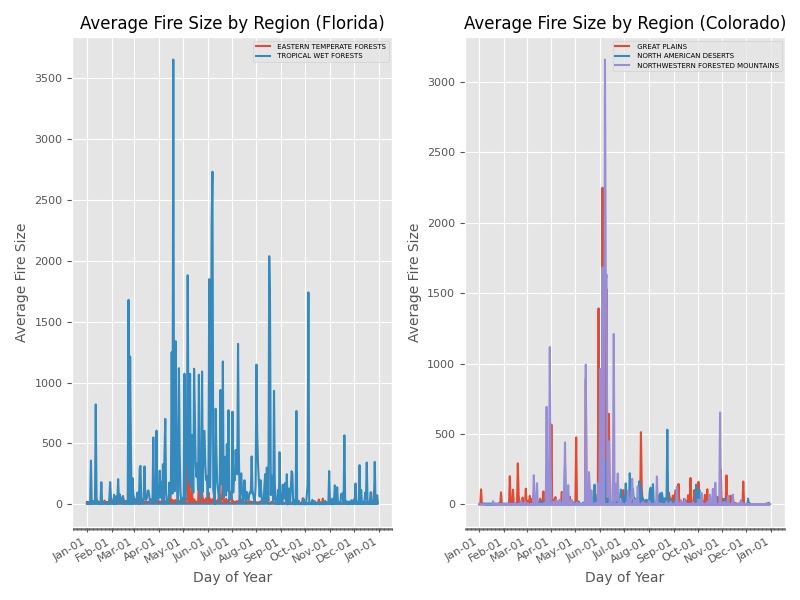
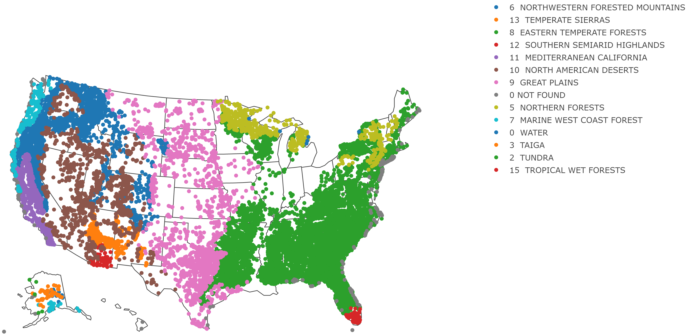
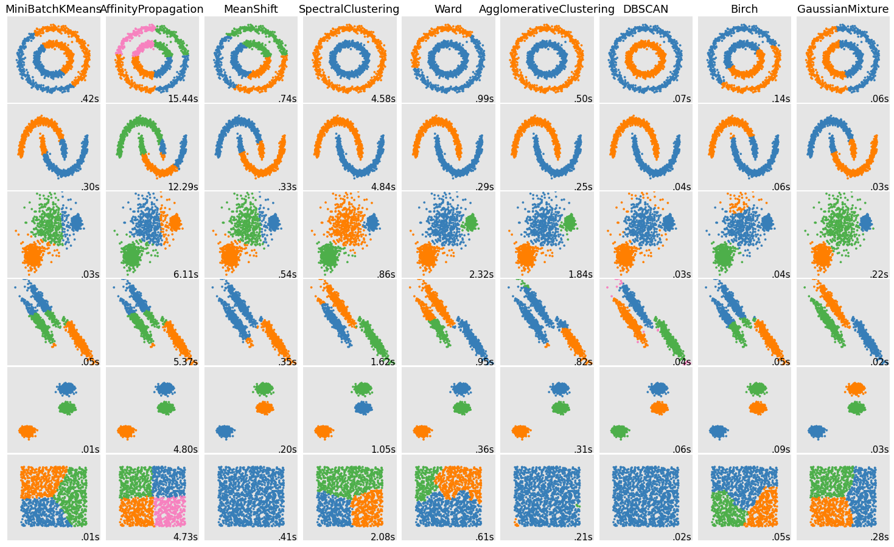
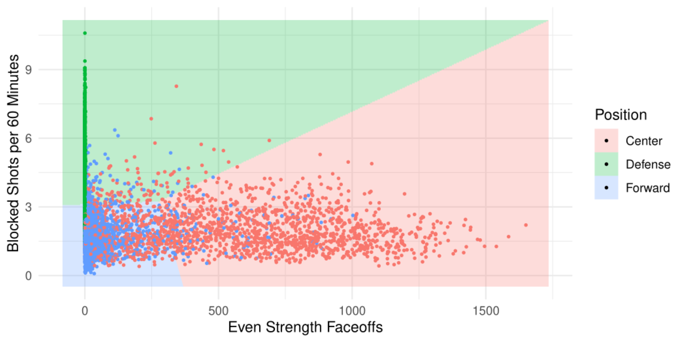
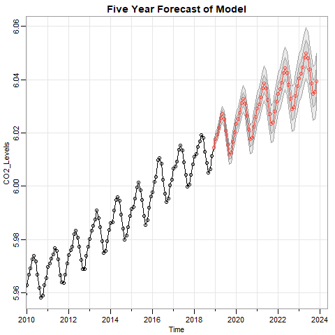
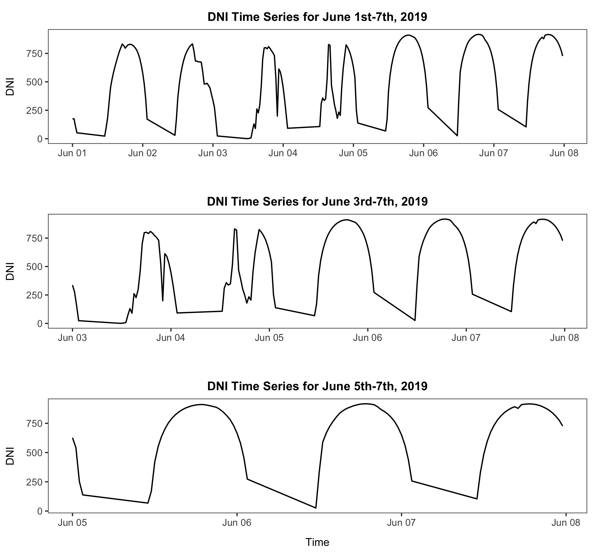

Hello, my name is Justin Nichols. I recently graduated with my Master of Science
in Statistics, where I focused heavily on Data Science. During this time, I
explored numerous modeling techniques. These consisted of complex neural
networks, or more interpretable methods like decisions trees. In the
following projects I highlight some of the work I'm most proud of. I also include my work
from a Machine Learning class to give a more detailed overview of what I've encountered in Python.

In this project, I create a movie recommender system in Python by utilizing a
library of previous ratings and a GUI to take in prior user information for a few of
the movies on hand. In doing this we collect information from the user in order to
provide a better resulting recommendation. A video demonstration on how the application works can be
seen above.

The purpose of this project was to demonstrate the use of direct communication to an SQL database using
Python. In particular, I subset a larger database by two states, create two relatable tables, and then use
these to produce graphics. The overall paper and code for this is found in the link.

For this project, a group and I used a database of 1.8 million wildfires occurring across various ecoregions
in the United States. From this data, we implemented various modeling techniques in order to tackle three tasks:
predict a binary accuracy (dividing the causes into two categories), predicting a specific cause, and also
predicting the size of the fire. In the latter task, we also make assumptions on the distribution in order to
make inferential conclusions. As this was a group effort, the paper can be found below, but only a portion of
the code.

Here you will find the different assignments (modules) and case studies (mini projects) that I completed throughout
the sememster. These are detailed in Jupyter Notebook giving a better idea of what is being covered in
each.

This project I teamed up with two other people, where we focused on finding a model to predict a player's
salary, while concentrating on the bias-variance trade-off exhibited with each modeling teachnique. We also
attempted to classify a player's position. The PDF contains the full report, analysis, and code, which can
found in the link below.

This assignment was part of the midterm for a Time Series class. I was tasked with peforming a time-domain
analysis on data regarding CO2 Levels. In doing this, I created a SARIMA model, where I looked to identify
the long and short term seasonality, as well as the autoregressive and moving average parts that satsified
this time series. In order to do this, I use the autocorrelation function (ACF) and partial autocorrelation
function (PACF). With a model determined, I then observe and conclude on the forecasted values and their
confidence intervals. I include the Rmarkdown file here to demonstrate my familiarity with its flow.

For this project, I grouped with two other people, where we cleaned and attempted to forecast. However, our
main goal was to use a straight foward time-series domain SARIMA approach, and compare it to building an ARIMA
model after we identifed the seasonality using the frequency domain. We did this because the series is
non-consecutive and thus, allows us to pinpoint the most influential period. To find this we observe the
Periodogram at its largest peak. The report and code can be found below through the link.